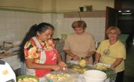
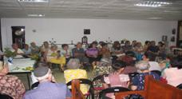

Ing. Alberto Zilberstein Toruncha
Presidente
Alberto
Fernández Barrocas
1er Vice-Presidente
Lic.
Salomón Susi Sarfati
2do Vice-Presidente
Ing.
Juan Luis Rousso Altuna
Administrador
Dr.
Jose Zilberstein Toruncha
Vice-Administrador
Yacob
Berezniak Hernandez
Tesorero
Tec.
Roberto Behar Mechulam
Vice– Tesorero
Raul
Vasquez Babani
Secretario
Jacobo
Mizrahi Chipruth
Vice - Secretario
Vocales:
Dr.
Pablo Corrales Susi
Daniel
Asquenazí Maya
Jacobo
Lipinsky Kosansky

|
Las
festividades judías todas tienen un significado especial en
la historia del pueblo judío, en Adath Israel la
celebramos con sus comidas tradicionales y la típica simja
del alma judía. Ya sea Purim donde leemos la meguila de Esther,
o sukot donde distinguimos las cuatros especies o en Pesaj
donde saboreamos la Matza Smurah, haciendo de cada fiesta
un recuerdo que queda grabado en nuestros corazones. Se realizan
en nuestra sinagoga actividades por fechas relevantes del
mundo moderno entre ellas: el día internacional de la mujer,
donde cada mujer de nuestra sinagoga recibe un ramo de flores,
un regalo y
lo más importante un reconocimiento de todos con una pequeña
pero profunda actividad cultural. También celebramos con
actividades de la misma índole: el día de las madres, los
padres y los niños. Otras actividades también realizamos por
el aniversario de independencia de Israel y en recordación
de los 6 millones de judíos que fueron victima del Holocausto.
|
PREPARATIVOS PARA PESAJ
|
|
 |
PURIM
|
|
|
ACTIVIDAD CON LAS MUJERES DE ADATH ISRAEL
|
 |
|
|